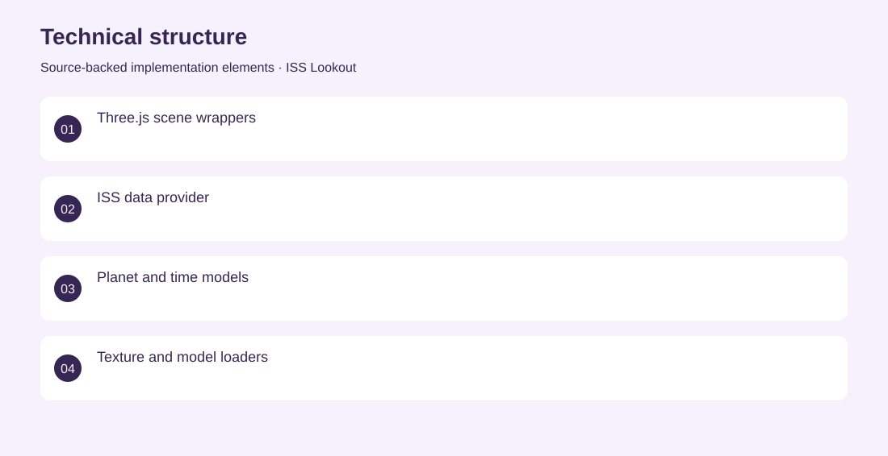
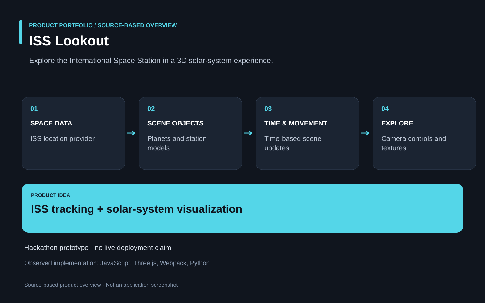

The project
Make space-station tracking and planetary context understandable through an interactive visual experience. A browser application combines an ISS data provider with Three.js scene components, planet textures, camera controls and time-based movement. Contributed to the hackathon application, including the engineering of interactive space visualization and data-driven scene behavior. NASA Space Apps Challenge 2022 prototype; current public deployment not verified.
The problem
Make space-station tracking and planetary context understandable through an interactive visual experience.
The solution
A browser application combines an ISS data provider with Three.js scene components, planet textures, camera controls and time-based movement.
My contribution
Contributed to the hackathon application, including the engineering of interactive space visualization and data-driven scene behavior.
Technical structure

Product overview

The portfolio cover is an editorial illustration. No live product screenshot is presented for this project.
Showcase assets
{kind=link}
{kind=link}
Existing product identity. Newly designed marks are portfolio treatments, not claims of official client branding.